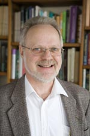

Supporting education and training in Africa
News Professor Yuti Chernajovsky and Iain Morton have chosen again to support DAAT for their extraordinary work in Africa helping disadvantaged people and empowering them through education. Importantly, DAAT as a charity, has minimal administrative staff and the money raised reaches the projects directly. They are proud to support their efforts and hope that through raising sponsorship for DAAT more people will benefit and improve their lives. They will be taking part in a sponsored charity ride London to Paris in 2013 - that's 4 days cycling and 295 miles!
- Click here to sponsor them.
What do we do?
- DAAT supports people and organisations in Africa, providing money for training and further education.
- We focus on empowering people particularly from disadvantaged groups such as people with disabilities, women and refugees.
- Our aim is to enhance the quality of life of people from these groups, their ability to work and to support their families, thereby encouraging improvement in society’s attitudes towards refugees, women and people with disabilities.
How do we do this?
- Supporting further education
We support students pursuing higher education courses within Africa, often through distance learning, which enables them to continue working and supporting their families while studying.
Subjects studied tend to be in the fields of rural development, education or practical skills. Students will have demonstrated a commitment to their local communities, and to continuing to work in their community.
We only need £15 per month to fund a student at the Open University of Tanzania on a degree course.
- Supporting community based programmes
We support a number of programmes of training and education in communities. These encourage disadvantaged groups to establish businesses, learn new skills, and enhance their abilities to support their families and communities In some cases these programmes have an influence on changing community attitudes towards people with disabilities, women and refugees, who often encounter significant prejudices. We have recently joined with the Tanzania Development Trust in a memorandum of understanding whereby they will use some of DAAT funds to finance projects in Tanzania, which follow our guiding principles of financing projects associated with education, disadvantaged people and refugees in Africa.
A great deal can be done with regular funding of up to £100 per month.
Our current community programmes are described further in other programmes page.
If you would like to support us, please go to the support page and send us funds to continue our work.